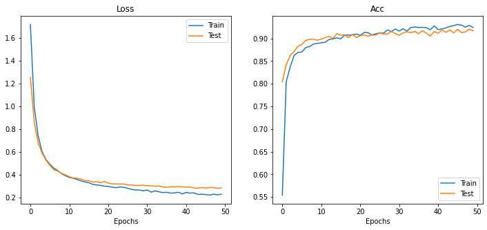

Image Sorting with Classification
This project combines a deep learning image classification model with a file sorting script, leveraging the power of PyTorch and EfficientNetB2 architecture for image classification while providing a convenient way to organize your image files into folders based on the predicted classes efficiently and conveniently.
► For details check the github repository here.
► The model can be checked on HuggingFace.
Technologies used
The project utilizes Python for scripting and PyTorch for building and training the neural network model using EfficientNetB2 architecture (transfer learning) for image classification.
Tqdm displays progress bars during training, enhancing user experience.
Pandas and Matplotlib are exclusively used in the notebook for data preprocessing and visualization.
Gradio for deploying the classification model on HuggingFace.
Pytest for writing and executing tests to ensure code reliability.
Getting started
Clone the repository
git clone https://github.com/georgescutelnicu/Image-Sorting-with-Classification.git
To train the EfficientNetB2 image classification model, follow these steps:
- Ensure you have the required libraries installed.
- Prepare your dataset with the following folder structure:
- To train the model on your system run the script with the following command:
python train.py --train-dir 'path/to/your/training/directory' --test-dir 'path/to/your/testing/directory' --epochs 100 --batch_size 32 --learning_rate 0.0003 --model_name 'model_0'
To sort your files, follow these steps:
- Ensure you have the required libraries installed.
- Run the script with the following command:
python sorter.py --input-path 'path/to/your/input/directory' --output-path 'path/to/your/output/directory' --weights-path 'path/to/your/model/weights' --class-names-path 'path/to/your/class_names.txt' -r
Current model
The model we're discussing was trained on a dataset containing various weather images. Its main task is to recognize different weather conditions shown in an image. It can accurately distinguish among 12 different classes of weather conditions. Notably, the test set utilized for evaluation shares the same distribution as the training set.
